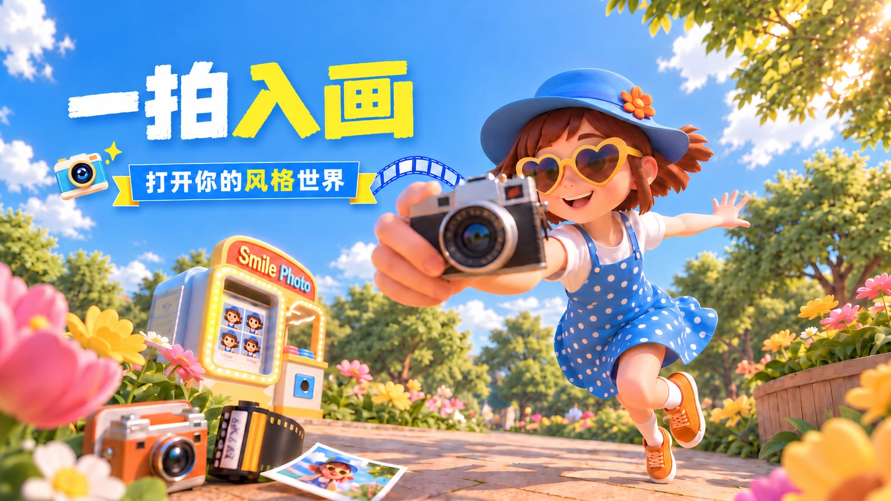

项目背景
该项目是面向有照片美化、创意玩法需求的泛C端用户，打造的AI照片风格转换工具运营活动。支持上传照片一键生成油画、动漫、电影、黏土3D四种不同风格的创意照片。覆盖用户社交分享、头像制作、创意内容创作等场景。

该项目是面向有照片美化、创意玩法需求的泛C端用户，打造的AI照片风格转换工具运营活动。支持上传照片一键生成油画、动漫、电影、黏土3D四种不同风格的创意照片。覆盖用户社交分享、头像制作、创意内容创作等场景。
过往同类AI作图工具活动普遍存在玩法介绍不清晰。用户不知道怎么操作，跳转路径繁琐，参与门槛高的问题。
用户活动参与率不足8%，生成后分享率不足3%。同时新用户转化率低，无法有效带动工具的用户增长和会员转化。
运营侧诉求是提升活动参与率至15%以上。用户作品分享率提升至8%。活动带来的新用户转化率提升至12%。
基于参与、分享与转化目标，拆解三条核心设计策略。
活动页核心操作按钮突出展示，三步完成上传-选风格-生成的全流程，降低用户参与门槛。
不同风格的生成效果直接在活动页做示例展示，用户直观看到生成效果，提升参与意愿。
设置集章解锁任务和权益礼包，激励用户完成生成、分享全流程，提升活动的活跃度和转化效果。
整体采用明亮的蓝黄配色，传递活泼、轻松的活动氛围。人物与场景使用圆润的 3D 卡通质感，强化亲和力。相机、胶卷、照片与照片亭围绕拍照和风格转换主题展开，建立统一的视觉认知。
左上方用醒目的艺术字突出「一拍入画」，搭配「打开你的风格世界」副标题，快速建立活动主题与核心玩法的认知。
以女孩向前伸出的相机和轻快动作制造空间感。花园、阳光与摄影道具共同营造明亮的探索场景，提升视觉吸引力。
所有元素围绕照片与风格转换展开。蓝色承载整体氛围，黄色强调主题与行动，并延续到 H5 卡片与按钮中。
明亮蓝黄 / 圆润形态 / 拍照主题 / 轻盈卡片
效果前置 + 路径轻量化 + 任务激励，串联完整的活动参与体验。
访问活动页后，点击参与按钮的用户占比。
业务目标：提升活动参与率
评估口径：活动后台数据
生成作品后，点击分享按钮的用户占比。
业务目标：提升用户作品分享率
评估口径：用户行为数据
活动带来的新用户中，购买会员的用户占比。
业务目标：提升新用户付费转化率
评估口径：营收数据
工具类运营活动一定要把核心效果和操作步骤前置展示。用户直观感知到活动价值才会愿意参与，能大幅提升活动的参与率。
该经验可复用在所有工具类、内容类产品的运营活动设计中。
轻量化操作路径是提升活动转化的核心。尽可能减少用户的操作步骤，让核心操作按钮在页面关键节点都有露出，降低用户的参与门槛。
该经验可复用在所有转化类运营活动的设计中。
合理的任务激励体系能有效提升用户的分享意愿和活跃度。用低门槛的权益撬动用户的自传播，带来更高的增长效果和转化率。
该经验可复用在所有用户增长类活动的设计中。